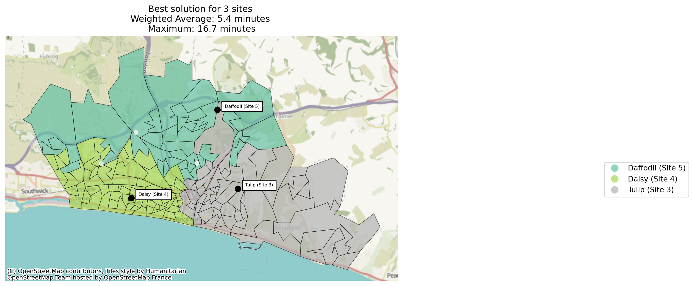

import pandas as pd
import plotly.express as px
from lokigi.site import SiteProblem
from lokigi.site_solutions import SolutionComparator
import plotly.graph_objects as go
import numpy as npMarginal Gains - Exploring the Impact of the Number of Sites in a Solution
First, let’s set up our problem.
problem = SiteProblem()
problem.add_demand("../../../sample_data/brighton_demand.csv", demand_col="demand", location_id_col="LSOA")
problem.add_sites("../../../sample_data/brighton_sites_named.geojson", candidate_id_col="site")
problem.add_travel_matrix(
travel_matrix_df="../../../sample_data/brighton_travel_matrix_driving_named.csv",
source_col="LSOA",
from_unit="seconds",
to_unit="minutes"
)
problem.add_region_geometry_layer("https://github.com/hsma-programme/h6_3d_facility_location_problems/raw/refs/heads/main/h6_3d_facility_location_problems/example_code/LSOA_2011_Boundaries_Super_Generalised_Clipped_BSC_EW_V4.geojson", common_col="LSOA11NM")Let’s explore the variation we see with a range of sites.
Tip
The p-sweep itself (solving once per candidate number of sites) is still hand-rolled below – we hope to make that part easier in future. But site_allocation_summary() and SolutionComparator.compare_site_allocation(), used later in this notebook, already answer the “was the extra site worth it?” question this analysis is usually in service of.
One useful aspect of how lokigi handles solving is that we can solve the same problem multiple times without having to make copies of the problem object, so you can solve for p=1 all the way up to p=6 with no difficulty!
Let’s go through and solve for every variant.
Note
We could do this in a loop to be more efficient, but here we’ll do it one by one for simplicity.
solutions_6 = problem.solve(p=6, objectives="p_median", threshold_for_coverage=10)
solutions_6.show_solutions().head(5)| solution_rank | site_names | site_indices | coverage_threshold | weighted_average | unweighted_average | 90th_percentile | max | total_cost | proportion_within_coverage_threshold | ... | gap_absolute_weighted | gap_relative_weighted | avg_lower_third_bins | avg_middle_third_bins | avg_upper_third_bins | inter_tertile_ratio | gap_absolute_description | gap_relative_description | inter_tertile_description | problem_df | |
|---|---|---|---|---|---|---|---|---|---|---|---|---|---|---|---|---|---|---|---|---|---|
| 0 | 1 | [Dahlia (Site 1), Begonia (Site 2), Tulip (Sit... | [0, 1, 2, 3, 4, 5] | 10 | 4.87 | 4.77 | 7.42 | 16.69 | NaN | 0.96 | ... | None | None | None | None | None | None | N/A (No equity data) | N/A (No equity data) | N/A (No equity data) | LSOA Dahlia (Site 1) ... |
1 rows × 26 columns
solutions_5 = problem.solve(p=5, objectives="p_median", threshold_for_coverage=10)
solutions_5.show_solutions().head(5)| solution_rank | site_names | site_indices | coverage_threshold | weighted_average | unweighted_average | 90th_percentile | max | total_cost | proportion_within_coverage_threshold | ... | gap_absolute_weighted | gap_relative_weighted | avg_lower_third_bins | avg_middle_third_bins | avg_upper_third_bins | inter_tertile_ratio | gap_absolute_description | gap_relative_description | inter_tertile_description | problem_df | |
|---|---|---|---|---|---|---|---|---|---|---|---|---|---|---|---|---|---|---|---|---|---|
| 0 | 1 | [Dahlia (Site 1), Tulip (Site 3), Daisy (Site ... | [0, 2, 3, 4, 5] | 10 | 4.96 | 4.88 | 7.42 | 16.69 | NaN | 0.96 | ... | None | None | None | None | None | None | N/A (No equity data) | N/A (No equity data) | N/A (No equity data) | LSOA Dahlia (Site 1) ... |
| 1 | 2 | [Dahlia (Site 1), Begonia (Site 2), Tulip (Sit... | [0, 1, 2, 3, 4] | 10 | 4.99 | 5.00 | 7.78 | 16.69 | NaN | 0.96 | ... | None | None | None | None | None | None | N/A (No equity data) | N/A (No equity data) | N/A (No equity data) | LSOA Dahlia (Site 1) ... |
| 2 | 3 | [Begonia (Site 2), Tulip (Site 3), Daisy (Site... | [1, 2, 3, 4, 5] | 10 | 5.02 | 4.93 | 7.42 | 16.69 | NaN | 0.96 | ... | None | None | None | None | None | None | N/A (No equity data) | N/A (No equity data) | N/A (No equity data) | LSOA Begonia (Site 2) ... |
| 3 | 4 | [Dahlia (Site 1), Begonia (Site 2), Tulip (Sit... | [0, 1, 2, 3, 5] | 10 | 5.05 | 4.90 | 7.67 | 16.69 | NaN | 0.95 | ... | None | None | None | None | None | None | N/A (No equity data) | N/A (No equity data) | N/A (No equity data) | LSOA Dahlia (Site 1) ... |
| 4 | 5 | [Dahlia (Site 1), Begonia (Site 2), Tulip (Sit... | [0, 1, 2, 4, 5] | 10 | 5.97 | 5.79 | 9.07 | 16.69 | NaN | 0.95 | ... | None | None | None | None | None | None | N/A (No equity data) | N/A (No equity data) | N/A (No equity data) | LSOA Dahlia (Site 1) ... |
5 rows × 26 columns
solutions_4 = problem.solve(p=4, objectives="p_median", threshold_for_coverage=10)
solutions_4.show_solutions().head(5)| solution_rank | site_names | site_indices | coverage_threshold | weighted_average | unweighted_average | 90th_percentile | max | total_cost | proportion_within_coverage_threshold | ... | gap_absolute_weighted | gap_relative_weighted | avg_lower_third_bins | avg_middle_third_bins | avg_upper_third_bins | inter_tertile_ratio | gap_absolute_description | gap_relative_description | inter_tertile_description | problem_df | |
|---|---|---|---|---|---|---|---|---|---|---|---|---|---|---|---|---|---|---|---|---|---|
| 0 | 1 | [Dahlia (Site 1), Tulip (Site 3), Daisy (Site ... | [0, 2, 3, 4] | 10 | 5.08 | 5.12 | 7.82 | 16.69 | NaN | 0.96 | ... | None | None | None | None | None | None | N/A (No equity data) | N/A (No equity data) | N/A (No equity data) | LSOA Dahlia (Site 1) ... |
| 1 | 2 | [Tulip (Site 3), Daisy (Site 4), Daffodil (Sit... | [2, 3, 4, 5] | 10 | 5.11 | 5.05 | 7.42 | 16.69 | NaN | 0.96 | ... | None | None | None | None | None | None | N/A (No equity data) | N/A (No equity data) | N/A (No equity data) | LSOA Tulip (Site 3) D... |
| 2 | 3 | [Begonia (Site 2), Tulip (Site 3), Daisy (Site... | [1, 2, 3, 5] | 10 | 5.20 | 5.07 | 7.75 | 16.69 | NaN | 0.95 | ... | None | None | None | None | None | None | N/A (No equity data) | N/A (No equity data) | N/A (No equity data) | LSOA Begonia (Site 2) ... |
| 3 | 4 | [Dahlia (Site 1), Begonia (Site 2), Tulip (Sit... | [0, 1, 2, 3] | 10 | 5.22 | 5.21 | 8.34 | 16.69 | NaN | 0.95 | ... | None | None | None | None | None | None | N/A (No equity data) | N/A (No equity data) | N/A (No equity data) | LSOA Dahlia (Site 1) ... |
| 4 | 5 | [Dahlia (Site 1), Tulip (Site 3), Daisy (Site ... | [0, 2, 3, 5] | 10 | 5.23 | 5.19 | 8.06 | 16.69 | NaN | 0.95 | ... | None | None | None | None | None | None | N/A (No equity data) | N/A (No equity data) | N/A (No equity data) | LSOA Dahlia (Site 1) ... |
5 rows × 26 columns
solutions_3 = problem.solve(p=3, objectives="p_median", threshold_for_coverage=10)
solutions_3.show_solutions().head(5)| solution_rank | site_names | site_indices | coverage_threshold | weighted_average | unweighted_average | 90th_percentile | max | total_cost | proportion_within_coverage_threshold | ... | gap_absolute_weighted | gap_relative_weighted | avg_lower_third_bins | avg_middle_third_bins | avg_upper_third_bins | inter_tertile_ratio | gap_absolute_description | gap_relative_description | inter_tertile_description | problem_df | |
|---|---|---|---|---|---|---|---|---|---|---|---|---|---|---|---|---|---|---|---|---|---|
| 0 | 1 | [Tulip (Site 3), Daisy (Site 4), Daffodil (Sit... | [2, 3, 4] | 10 | 5.37 | 5.45 | 8.50 | 16.69 | NaN | 0.96 | ... | None | None | None | None | None | None | N/A (No equity data) | N/A (No equity data) | N/A (No equity data) | LSOA Tulip (Site 3) D... |
| 1 | 2 | [Tulip (Site 3), Daisy (Site 4), Snowdrop (Sit... | [2, 3, 5] | 10 | 5.38 | 5.36 | 8.06 | 16.69 | NaN | 0.95 | ... | None | None | None | None | None | None | N/A (No equity data) | N/A (No equity data) | N/A (No equity data) | LSOA Tulip (Site 3) D... |
| 2 | 3 | [Dahlia (Site 1), Tulip (Site 3), Daisy (Site 4)] | [0, 2, 3] | 10 | 5.53 | 5.67 | 9.36 | 16.69 | NaN | 0.93 | ... | None | None | None | None | None | None | N/A (No equity data) | N/A (No equity data) | N/A (No equity data) | LSOA Dahlia (Site 1) ... |
| 3 | 4 | [Begonia (Site 2), Tulip (Site 3), Daisy (Site... | [1, 2, 3] | 10 | 5.54 | 5.59 | 9.00 | 16.69 | NaN | 0.94 | ... | None | None | None | None | None | None | N/A (No equity data) | N/A (No equity data) | N/A (No equity data) | LSOA Begonia (Site 2) ... |
| 4 | 5 | [Dahlia (Site 1), Tulip (Site 3), Snowdrop (Si... | [0, 2, 5] | 10 | 6.32 | 6.21 | 9.33 | 16.69 | NaN | 0.94 | ... | None | None | None | None | None | None | N/A (No equity data) | N/A (No equity data) | N/A (No equity data) | LSOA Dahlia (Site 1) ... |
5 rows × 26 columns
solutions_2 = problem.solve(p=2, objectives="p_median", threshold_for_coverage=10)
solutions_2.show_solutions()| solution_rank | site_names | site_indices | coverage_threshold | weighted_average | unweighted_average | 90th_percentile | max | total_cost | proportion_within_coverage_threshold | ... | gap_absolute_weighted | gap_relative_weighted | avg_lower_third_bins | avg_middle_third_bins | avg_upper_third_bins | inter_tertile_ratio | gap_absolute_description | gap_relative_description | inter_tertile_description | problem_df | |
|---|---|---|---|---|---|---|---|---|---|---|---|---|---|---|---|---|---|---|---|---|---|
| 0 | 1 | [Tulip (Site 3), Daisy (Site 4)] | [2, 3] | 10 | 5.94 | 6.21 | 10.46 | 16.69 | NaN | 0.89 | ... | None | None | None | None | None | None | N/A (No equity data) | N/A (No equity data) | N/A (No equity data) | LSOA Tulip (Site 3) D... |
| 1 | 2 | [Tulip (Site 3), Snowdrop (Site 6)] | [2, 5] | 10 | 6.69 | 6.60 | 9.45 | 16.69 | NaN | 0.92 | ... | None | None | None | None | None | None | N/A (No equity data) | N/A (No equity data) | N/A (No equity data) | LSOA Tulip (Site 3) S... |
| 2 | 3 | [Dahlia (Site 1), Tulip (Site 3)] | [0, 2] | 10 | 6.81 | 6.88 | 10.19 | 16.69 | NaN | 0.87 | ... | None | None | None | None | None | None | N/A (No equity data) | N/A (No equity data) | N/A (No equity data) | LSOA Dahlia (Site 1) ... |
| 3 | 4 | [Daisy (Site 4), Daffodil (Site 5)] | [3, 4] | 10 | 7.33 | 7.14 | 12.26 | 21.71 | NaN | 0.76 | ... | None | None | None | None | None | None | N/A (No equity data) | N/A (No equity data) | N/A (No equity data) | LSOA Daisy (Site 4) D... |
| 4 | 5 | [Begonia (Site 2), Daisy (Site 4)] | [1, 3] | 10 | 7.46 | 7.31 | 11.93 | 23.92 | NaN | 0.76 | ... | None | None | None | None | None | None | N/A (No equity data) | N/A (No equity data) | N/A (No equity data) | LSOA Begonia (Site 2) ... |
| 5 | 6 | [Tulip (Site 3), Daffodil (Site 5)] | [2, 4] | 10 | 7.61 | 7.62 | 11.58 | 16.69 | NaN | 0.71 | ... | None | None | None | None | None | None | N/A (No equity data) | N/A (No equity data) | N/A (No equity data) | LSOA Tulip (Site 3) D... |
| 6 | 7 | [Daisy (Site 4), Snowdrop (Site 6)] | [3, 5] | 10 | 8.23 | 7.85 | 13.72 | 22.86 | NaN | 0.61 | ... | None | None | None | None | None | None | N/A (No equity data) | N/A (No equity data) | N/A (No equity data) | LSOA Daisy (Site 4) S... |
| 7 | 8 | [Begonia (Site 2), Snowdrop (Site 6)] | [1, 5] | 10 | 8.36 | 7.93 | 11.90 | 22.86 | NaN | 0.74 | ... | None | None | None | None | None | None | N/A (No equity data) | N/A (No equity data) | N/A (No equity data) | LSOA Begonia (Site 2) ... |
| 8 | 9 | [Dahlia (Site 1), Begonia (Site 2)] | [0, 1] | 10 | 8.45 | 8.15 | 11.98 | 23.92 | NaN | 0.69 | ... | None | None | None | None | None | None | N/A (No equity data) | N/A (No equity data) | N/A (No equity data) | LSOA Dahlia (Site 1) ... |
| 9 | 10 | [Daffodil (Site 5), Snowdrop (Site 6)] | [4, 5] | 10 | 8.52 | 8.08 | 12.65 | 21.71 | NaN | 0.72 | ... | None | None | None | None | None | None | N/A (No equity data) | N/A (No equity data) | N/A (No equity data) | LSOA Daffodil (Site 5)... |
| 10 | 11 | [Dahlia (Site 1), Daffodil (Site 5)] | [0, 4] | 10 | 8.56 | 8.20 | 12.65 | 21.71 | NaN | 0.66 | ... | None | None | None | None | None | None | N/A (No equity data) | N/A (No equity data) | N/A (No equity data) | LSOA Dahlia (Site 1) ... |
| 11 | 12 | [Begonia (Site 2), Tulip (Site 3)] | [1, 2] | 10 | 8.69 | 8.77 | 14.30 | 16.69 | NaN | 0.59 | ... | None | None | None | None | None | None | N/A (No equity data) | N/A (No equity data) | N/A (No equity data) | LSOA Begonia (Site 2) ... |
| 12 | 13 | [Dahlia (Site 1), Daisy (Site 4)] | [0, 3] | 10 | 9.19 | 8.96 | 15.21 | 26.33 | NaN | 0.54 | ... | None | None | None | None | None | None | N/A (No equity data) | N/A (No equity data) | N/A (No equity data) | LSOA Dahlia (Site 1) ... |
| 13 | 14 | [Begonia (Site 2), Daffodil (Site 5)] | [1, 4] | 10 | 9.19 | 8.95 | 12.19 | 21.71 | NaN | 0.55 | ... | None | None | None | None | None | None | N/A (No equity data) | N/A (No equity data) | N/A (No equity data) | LSOA Begonia (Site 2) ... |
| 14 | 15 | [Dahlia (Site 1), Snowdrop (Site 6)] | [0, 5] | 10 | 9.39 | 8.86 | 14.26 | 22.86 | NaN | 0.59 | ... | None | None | None | None | None | None | N/A (No equity data) | N/A (No equity data) | N/A (No equity data) | LSOA Dahlia (Site 1) ... |
15 rows × 26 columns
solutions_1 = problem.solve(p=1, objectives="p_median", threshold_for_coverage=10)
solutions_1.show_solutions()| solution_rank | site_names | site_indices | coverage_threshold | weighted_average | unweighted_average | 90th_percentile | max | total_cost | proportion_within_coverage_threshold | ... | gap_absolute_weighted | gap_relative_weighted | avg_lower_third_bins | avg_middle_third_bins | avg_upper_third_bins | inter_tertile_ratio | gap_absolute_description | gap_relative_description | inter_tertile_description | problem_df | |
|---|---|---|---|---|---|---|---|---|---|---|---|---|---|---|---|---|---|---|---|---|---|
| 0 | 1 | [Tulip (Site 3)] | [2] | 10 | 9.74 | 10.17 | 16.72 | 19.57 | NaN | 0.53 | ... | None | None | None | None | None | None | N/A (No equity data) | N/A (No equity data) | N/A (No equity data) | LSOA Tulip (Site 3) ... |
| 1 | 2 | [Snowdrop (Site 6)] | [5] | 10 | 9.75 | 9.25 | 14.26 | 22.86 | NaN | 0.57 | ... | None | None | None | None | None | None | N/A (No equity data) | N/A (No equity data) | N/A (No equity data) | LSOA Snowdrop (Site 6)... |
| 2 | 3 | [Daffodil (Site 5)] | [4] | 10 | 9.89 | 9.56 | 13.24 | 21.71 | NaN | 0.46 | ... | None | None | None | None | None | None | N/A (No equity data) | N/A (No equity data) | N/A (No equity data) | LSOA Daffodil (Site 5)... |
| 3 | 4 | [Daisy (Site 4)] | [3] | 10 | 9.97 | 9.84 | 16.95 | 26.82 | NaN | 0.51 | ... | None | None | None | None | None | None | N/A (No equity data) | N/A (No equity data) | N/A (No equity data) | LSOA Daisy (Site 4) ... |
| 4 | 5 | [Begonia (Site 2)] | [1] | 10 | 10.67 | 10.54 | 15.01 | 23.92 | NaN | 0.39 | ... | None | None | None | None | None | None | N/A (No equity data) | N/A (No equity data) | N/A (No equity data) | LSOA Begonia (Site 2) ... |
| 5 | 6 | [Dahlia (Site 1)] | [0] | 10 | 11.79 | 11.25 | 17.47 | 26.33 | NaN | 0.37 | ... | None | None | None | None | None | None | N/A (No equity data) | N/A (No equity data) | N/A (No equity data) | LSOA Dahlia (Site 1) ... |
6 rows × 26 columns
Let’s combine these into a single dataframe with the best solution for each (ranked on the weighted average).
all_sols = pd.concat(
[solutions_1.solution_df.head(1),
solutions_2.solution_df.head(1),
solutions_3.solution_df.head(1),
solutions_4.solution_df.head(1),
solutions_5.solution_df.head(1),
solutions_6.solution_df.head(1)
]
)Let’s now add a column containing the number of sites in each solution. We do this by counting the length of the ‘site_indices’ column.
Note
Counting “site_names” would achieve the same thing!
all_sols["n_sites"] = all_sols["site_indices"].apply(lambda x: len(x))Let’s take a look at our final dataframe.
all_sols| solution_rank | site_names | site_indices | coverage_threshold | weighted_average | unweighted_average | 90th_percentile | max | total_cost | proportion_within_coverage_threshold | ... | gap_relative_weighted | avg_lower_third_bins | avg_middle_third_bins | avg_upper_third_bins | inter_tertile_ratio | gap_absolute_description | gap_relative_description | inter_tertile_description | problem_df | n_sites | |
|---|---|---|---|---|---|---|---|---|---|---|---|---|---|---|---|---|---|---|---|---|---|
| 0 | 1 | [Tulip (Site 3)] | [2] | 10 | 9.738592 | 10.167285 | 16.720433 | 19.571000 | NaN | 0.526800 | ... | None | None | None | None | None | N/A (No equity data) | N/A (No equity data) | N/A (No equity data) | LSOA Tulip (Site 3) ... | 1 |
| 0 | 1 | [Tulip (Site 3), Daisy (Site 4)] | [2, 3] | 10 | 5.943984 | 6.207341 | 10.461133 | 16.688833 | NaN | 0.892873 | ... | None | None | None | None | None | N/A (No equity data) | N/A (No equity data) | N/A (No equity data) | LSOA Tulip (Site 3) D... | 2 |
| 0 | 1 | [Tulip (Site 3), Daisy (Site 4), Daffodil (Sit... | [2, 3, 4] | 10 | 5.372208 | 5.447841 | 8.503100 | 16.688833 | NaN | 0.956420 | ... | None | None | None | None | None | N/A (No equity data) | N/A (No equity data) | N/A (No equity data) | LSOA Tulip (Site 3) D... | 3 |
| 0 | 1 | [Dahlia (Site 1), Tulip (Site 3), Daisy (Site ... | [0, 2, 3, 4] | 10 | 5.080178 | 5.115660 | 7.820333 | 16.688833 | NaN | 0.962814 | ... | None | None | None | None | None | N/A (No equity data) | N/A (No equity data) | N/A (No equity data) | LSOA Dahlia (Site 1) ... | 4 |
| 0 | 1 | [Dahlia (Site 1), Tulip (Site 3), Daisy (Site ... | [0, 2, 3, 4, 5] | 10 | 4.957668 | 4.880920 | 7.417933 | 16.688833 | NaN | 0.962814 | ... | None | None | None | None | None | N/A (No equity data) | N/A (No equity data) | N/A (No equity data) | LSOA Dahlia (Site 1) ... | 5 |
| 0 | 1 | [Dahlia (Site 1), Begonia (Site 2), Tulip (Sit... | [0, 1, 2, 3, 4, 5] | 10 | 4.868855 | 4.765469 | 7.417933 | 16.688833 | NaN | 0.962814 | ... | None | None | None | None | None | N/A (No equity data) | N/A (No equity data) | N/A (No equity data) | LSOA Dahlia (Site 1) ... | 6 |
6 rows × 27 columns
Let’s now create a simple bar plot of the weighted average travel time of the best solution with each number of sites.
px.bar(all_sols, x="n_sites", y="weighted_average", title="Weighted average travel time by number of sites (Lower = Better)")We can see that there are huge gains in average travel time when you move from 1 site to 2, but the gains beyond that for each additional site are not so dramatic.
We can then create additional plots for different metrics.
px.bar(all_sols, x="n_sites", y="max", title="Maximum travel time by number of sites (Lower = Better)")px.bar(all_sols, x="n_sites", y="90th_percentile", title="90th percentile travel time by number of sites (Lower = Better)")px.bar(all_sols, x="n_sites", y="proportion_within_coverage_threshold", title="% of demand within 10 minutes travel time (driving) by number of sites (Higher = Better)")Advanced plots
These bar plots are a good start, but don’t give a clear picture of the actual marginal gains.
Let’s start by adding some useful extra data to our plots.
First, we’ll add a marginal gain column. This will give us the improvement relative to the previous number of sites.
For example, we know that the best solution for 1 site has a weighted average travel time of 9.7 minutes. The best solution for 2 sites has a weighted average travel time of 5.9 minutes. Therefore, the marginal gain is 3.8 minutes.
all_sols["marginal_gain"] = all_sols["weighted_average"].shift(1) - all_sols["weighted_average"]We can then also calculate the relative gain - how much improvement there is relative to the first site.
Here, we’re saying that, for example
# Total possible improvement (1 site → max sites)
total_improvement = all_sols["weighted_average"].iloc[0] - all_sols["weighted_average"].iloc[-1]
# Cumulative improvement from baseline
all_sols["cumulative_improvement"] = all_sols["weighted_average"].iloc[0] - all_sols["weighted_average"]
# % of total achieved
all_sols["pct_of_total"] = all_sols["cumulative_improvement"] / total_improvement
all_sols["marginal_pct_total"] = all_sols["marginal_gain"] / total_improvementall_sols| solution_rank | site_names | site_indices | coverage_threshold | weighted_average | unweighted_average | 90th_percentile | max | total_cost | proportion_within_coverage_threshold | ... | inter_tertile_ratio | gap_absolute_description | gap_relative_description | inter_tertile_description | problem_df | n_sites | marginal_gain | cumulative_improvement | pct_of_total | marginal_pct_total | |
|---|---|---|---|---|---|---|---|---|---|---|---|---|---|---|---|---|---|---|---|---|---|
| 0 | 1 | [Tulip (Site 3)] | [2] | 10 | 9.738592 | 10.167285 | 16.720433 | 19.571000 | NaN | 0.526800 | ... | None | N/A (No equity data) | N/A (No equity data) | N/A (No equity data) | LSOA Tulip (Site 3) ... | 1 | NaN | 0.000000 | 0.000000 | NaN |
| 0 | 1 | [Tulip (Site 3), Daisy (Site 4)] | [2, 3] | 10 | 5.943984 | 6.207341 | 10.461133 | 16.688833 | NaN | 0.892873 | ... | None | N/A (No equity data) | N/A (No equity data) | N/A (No equity data) | LSOA Tulip (Site 3) D... | 2 | 3.794607 | 3.794607 | 0.779222 | 0.779222 |
| 0 | 1 | [Tulip (Site 3), Daisy (Site 4), Daffodil (Sit... | [2, 3, 4] | 10 | 5.372208 | 5.447841 | 8.503100 | 16.688833 | NaN | 0.956420 | ... | None | N/A (No equity data) | N/A (No equity data) | N/A (No equity data) | LSOA Tulip (Site 3) D... | 3 | 0.571776 | 4.366384 | 0.896636 | 0.117414 |
| 0 | 1 | [Dahlia (Site 1), Tulip (Site 3), Daisy (Site ... | [0, 2, 3, 4] | 10 | 5.080178 | 5.115660 | 7.820333 | 16.688833 | NaN | 0.962814 | ... | None | N/A (No equity data) | N/A (No equity data) | N/A (No equity data) | LSOA Dahlia (Site 1) ... | 4 | 0.292029 | 4.658413 | 0.956605 | 0.059968 |
| 0 | 1 | [Dahlia (Site 1), Tulip (Site 3), Daisy (Site ... | [0, 2, 3, 4, 5] | 10 | 4.957668 | 4.880920 | 7.417933 | 16.688833 | NaN | 0.962814 | ... | None | N/A (No equity data) | N/A (No equity data) | N/A (No equity data) | LSOA Dahlia (Site 1) ... | 5 | 0.122510 | 4.780924 | 0.981762 | 0.025158 |
| 0 | 1 | [Dahlia (Site 1), Begonia (Site 2), Tulip (Sit... | [0, 1, 2, 3, 4, 5] | 10 | 4.868855 | 4.765469 | 7.417933 | 16.688833 | NaN | 0.962814 | ... | None | N/A (No equity data) | N/A (No equity data) | N/A (No equity data) | LSOA Dahlia (Site 1) ... | 6 | 0.088813 | 4.869737 | 1.000000 | 0.018238 |
6 rows × 31 columns
Tip
We’ve done this here for weighted average - but you could use the same code and apply it to any of the other metrics.
Now let’s work on some additional plots.
Perhaps the simplest option is just to plot the marginal gains as a line, which clearly shows the magnitude of the returns at each additional site number.
all_sols["high_value"] = all_sols["marginal_pct_total"] > 0.1 # tweak threshold
all_sols["n_sites_comparison"] = all_sols["n_sites"] - 1
fig = px.line(
all_sols,
x="n_sites",
y="marginal_gain",
markers=True,
title="Diminishing Marginal Gains in Improvement to Demand-weighted Average Travel Time",
)
# Custom hover text
fig.update_traces(
mode="lines+markers+text",
hovertemplate=(
"<b>%{x} sites</b><br>"
"Marginal gain moving from %{customdata[3]} sites to %{customdata[2]} sites: %{y:.2f} minutes (%{customdata[1]:.1%} improvement) <br>"
"Weighted average travel time for best solution with %{customdata[2]} sites: %{customdata[0]:.2f} minutes<br>"
"% of total possible improvement achieved with %{customdata[2]} sites: %{customdata[4]:.1%}<extra></extra>"
),
customdata=all_sols[["weighted_average", "marginal_pct_total", "n_sites", "n_sites_comparison", "pct_of_total"]].values,
text=[
f"{mg:.2f} minute improvement<br><i>{pct:.0%} improvement<br>vs {nst} site(s)</i>"
for mg, pct,nst in zip(all_sols["marginal_gain"], all_sols["marginal_pct_total"], all_sols["n_sites_comparison"])
],
textposition="top right",
marker=dict(
color=all_sols["marginal_pct_total"], # continuous colour scale
colorscale="BlueRed_r",
showscale=False,
colorbar=dict(title="% of total"),
size=12
)
)
fig.update_traces(
)
fig.update_layout(
xaxis_title="Number of Sites",
yaxis_title="Improvement from Adding Site<br>(Weighted Average Travel Time in Minutes)",
template="plotly_white"
)
# We could optionally add in a line at the point the improvement from an additional
# site is below a certain percentage
# threshold_point = 0.1
# threshold = threshold_point * all_sols["marginal_gain"].iloc[1]
# elbow = all_sols[all_sols["marginal_gain"] < threshold].iloc[0]
# fig.add_vline(
# x=elbow["n_sites"],
# line_dash="dash",
# annotation_text=f"Elbow ~ {int(elbow['n_sites'])} sites",
# annotation_position="top"
# )
fig.update_yaxes(range=(
0,
np.nanmax(all_sols["marginal_gain"]*1.3)
))
fig.update_xaxes(range=(
1.5,
np.nanmax(all_sols["n_sites"]+1)
))
fig.show()We can now clearly see that moving from 1 site to 2 sites reduces the weighted average travel time by nearly 4 minutes, but moving up to 3 sites from 2 sites only provides an average travel time reduction of around half a minute.
We can also plot this as the % of the theoretical maximum improvement achievable. By adding in a horizontal line at 1, we give a clear reference point with a diminishing area.
fig = px.line(
all_sols,
x="n_sites",
y="pct_of_total",
markers=True,
title="Diminishing Marginal Gains"
)
fig.add_hline(y=1.0, line_dash="dash")
fig.update_traces(
hovertemplate=(
"<b>%{x} sites</b><br>"
"Marginal gain moving from %{customdata[3]} sites to %{customdata[2]} sites: %{y:.2f} minutes (%{customdata[1]:.1%} improvement) <br>"
"Weighted average travel time for best solution with %{customdata[2]} sites: %{customdata[0]:.2f} minutes<br>"
"% of total possible improvement achieved with %{customdata[2]} sites: %{customdata[4]:.1%}<extra></extra>"
),
customdata=all_sols[["weighted_average", "marginal_pct_total", "n_sites", "n_sites_comparison", "pct_of_total"]].values,
)
fig.update_layout(
xaxis_title="Number of Sites",
yaxis_title="Improvement from Adding Site<br>(% of total possible improvement)",
template="plotly_white",
yaxis=dict(tickformat=".0%")
)
fig.show()Another plot option is a waterfall plot.
Warning
Consider the data literacy of your stakeholders - is this interpretable for them?
fig = go.Figure(go.Waterfall(
x=all_sols["n_sites"],
y=all_sols["marginal_gain"].fillna(0),
measure=["absolute"] + ["relative"]*(len(all_sols)-1),
text=[f"{v:.2f}" if pd.notna(v) else "" for v in all_sols["marginal_gain"]],
))
fig.update_layout(
title="Marginal Improvement in Weighted Travel Time (Minutes) from Adding Sites",
xaxis_title="Number of Sites",
yaxis_title="Improvement in Weighted Average",
template="plotly_white"
)
fig.update_yaxes(range=(0,6))
fig.show()Who actually uses each site?
The plots above all show how the average travel time changes as we add sites. They don’t show who each site actually serves – and that’s often the more persuasive number when deciding whether a new site is worth its cost. A site that only picks up a small share of demand is a weak case for opening, even where it visibly improves the average.
site_allocation_summary() answers this directly: for a chosen solution, it reports the share of demand (or of regions) whose closest site is each selected site.
solutions_3.site_allocation_summary().round(2)| n_regions | total_demand | proportion | average_travel_cost | |
|---|---|---|---|---|
| site | ||||
| Tulip (Site 3) | 59 | 139817 | 0.42 | 5.64 |
| Daisy (Site 4) | 66 | 127759 | 0.39 | 4.62 |
| Daffodil (Site 5) | 40 | 61957 | 0.19 | 6.31 |
solutions_3.plot_site_allocation_summary()The colours in the chart above match plot_best_combination(plot_site_allocation=True) below, so the bar chart can be read as a quantitative version of the map’s legend – the map shows which regions each site serves, the bar chart shows how much.
solutions_3.plot_best_combination(plot_site_allocation=True)
By default, site_allocation_summary() weights each region by its registered demand (“what share of people is this site closest to?”). Passing by="regions" instead counts every region equally (“what share of places?”), following the same people-vs-places naming rule used by the coverage metrics (see the coverage metrics example). The two views can tell a different story on a problem where demand is unevenly distributed across regions.
solutions_3.site_allocation_summary(by="regions").round(2)| n_regions | total_demand | proportion | average_travel_cost | |
|---|---|---|---|---|
| site | ||||
| Tulip (Site 3) | 59 | 139817 | 0.36 | 5.89 |
| Daisy (Site 4) | 66 | 127759 | 0.40 | 4.72 |
| Daffodil (Site 5) | 40 | 61957 | 0.24 | 6.00 |
Whose demand did the third site actually take?
The table above tells us Daffodil (Site 5)‘s share of demand in the 3-site solution, but not where that demand came from – did it take a roughly even slice from both existing sites, or almost entirely from one of them? SolutionComparator.compare_site_allocation() puts the 2-site and 3-site solutions’ allocation shares side by side to answer that.
comparator = SolutionComparator(solutions_2, solutions_3, labels=("2 sites", "3 sites"))
comparator.compare_site_allocation().round(2)| 2 sites | 3 sites | difference | |
|---|---|---|---|
| site | |||
| Tulip (Site 3) | 0.54 | 0.42 | 0.12 |
| Daisy (Site 4) | 0.46 | 0.39 | 0.07 |
| Daffodil (Site 5) | NaN | 0.19 | NaN |
Daffodil (Site 5) is NaN in the “2 sites” column – it isn’t part of that solution at all, rather than being present with a 0% share, which is the distinction the method is built to preserve. Once it’s added, it picks up close to 19% of demand, taking around 12 percentage points from Tulip (Site 3) and 7 from Daisy (Site 4) rather than drawing evenly from both. That’s a genuine catchment, not a negligible one – consistent with the marginal-gain analysis above, where the third site’s ~0.6 minute improvement to the weighted average was real but already much smaller than the jump from one site to two.
We can also use this method for looking at the average travel cost.
comparator.compare_site_allocation(metric="average_travel_cost").round(2)| 2 sites | 3 sites | difference | |
|---|---|---|---|
| site | |||
| Tulip (Site 3) | 6.44 | 5.64 | 0.80 |
| Daisy (Site 4) | 5.35 | 4.62 | 0.74 |
| Daffodil (Site 5) | NaN | 6.31 | NaN |